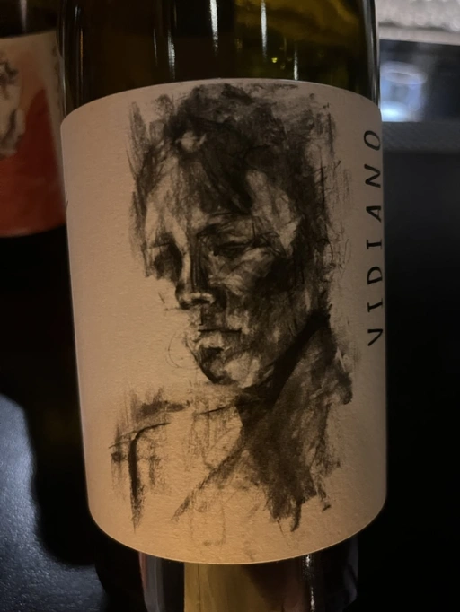

- Type
- White Still, Dry
- Producer
- Shima L.P Winery
- Vintage
- 2020
- Location
- Greece, PGI Rethymno
- Grapes
- Vidiano
- Alcohol
- 14
- Sugar
- NA
- Price
- 750 UAH
- Cellar
- N/A
Project by oenologist Iliana Malihin and vinegrower Spyros Chryssos. Produced and bottled in Rethymno, Crete. Comes from a single terroir - Amygdalos, located on 740-800 m above sea level. It spent 12 months on the lees.
Ratings
2022-07-29 - 5.00
Rare Vidiano grape by oenologist Iliana Malihin and vinegrower Spyros Chryssos. It spent 12 months on the lees. It comes from a single terroir, Amygladol, with an altitude 740m - 800m. Scary? Nope, this one was okay. Popcorn, white flowers, rotten water… At least it has some acidity and volume. Still flabby like others. Tasting wine is not that simple.